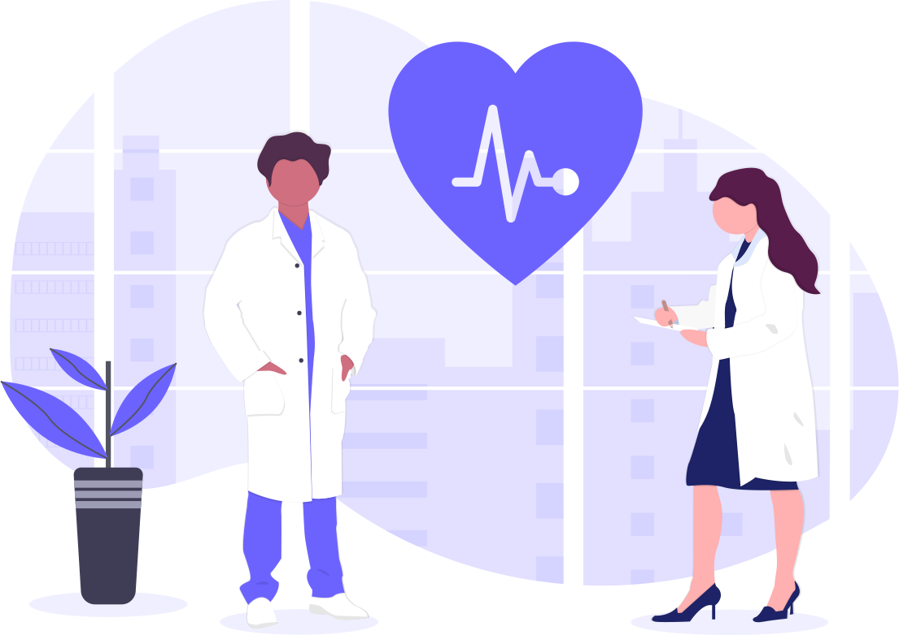

Calculadora de IMC
Olá seja bem-vindo, meu nome é João Vitor e desenvolvi esse projeto de uma calculadora de IMC
(Indice de massa corporal) para treinar meus conhecimentos como estudante de desenvolvimento Web
Um corpo abaixo do peso ideal pode esconder problemas de saúde como diabetes e hipertireoidismo,
entre outros males, assim como pode acarretar distúrbios que chegam até mesmo colocar a sua vida em
risco. Saber as causa e consequências do baixo peso é essencal para a manutenção da saúde e do
bem-estar.

Alguns cuidados
Baixo peso pode estar associado a anorexia que é um transtorno alimentar capaz de afetar pacientes
de ambos os sexos, causado por um desejo excessivo, ilimitado e sem controle de emagrecer e se
manter em um determinado "padrão de beleza", se você está com algum sintoma procure a ajuda de um
profissional, seja
ele
um médico nutricionista para lhe passar uma dieta equilibrada e com cuidados e um psicólogo para lhe
orientar e te ajudar.
lembrando que corpo sarado nem sempre é sinônimo de saúde, faça por você e acima de tudo SE AME!!

Estar no peso apropriado aumenta os níveis de HDL (colesterol bom) e diminui a quantidade de LDL
(colesterol ruim) e triglicerídeos (gordura). Logo, há uma redução nos riscos de entupimento das
artérias e, então, o organismo fica menos propício a desenvolver doenças cardiovasculares.
Dicas para se manter no peso ideal:
1. Consuma alimentos fontes de proteínas magras;
2. Consuma alimentos fontes de carboidratos integrais;
3. Evite as gorduras ruins: saturada e trans, inclua alimentos fontes de gorduras saudáveis:
abacate, azeite extra virgem, oleaginosas (castanha, amêndoa, noz), peixe;
4. Consuma açúcar e sal com moderação;
5. Aumente a ingestão de água nos intervalos das refeições;

A Obesidade é uma doença crônca , a qual se caracteriza pelo acúmulo excessivo de gordura corporal.
É considerada fator de risco para uma série de outros problemas como doenças cardiovasculares,
diabetes e até mesmo o câncer. Uma dieta desbalanceada e o sedentarismo estão relacionados com o
desenvolvmento dessa doença

Alguns cuidados
para prevenir a Obesidade ou cuidar dela é preciso esforço, dedicação e orientação médica. Você deve
evitar comidas gordurosas, sedentarismo, muito açucar e procurar a ajuda de um profissional, seja
ele
um médico nutricionista para lhe orientar sobre e/ou a ajuda de um profissional para lhe auxiliar na
hora de exercícios.
lembrando que corpo sarado nem sempre é sinônimo de saúde, faça por você e acima de tudo SE AME!!